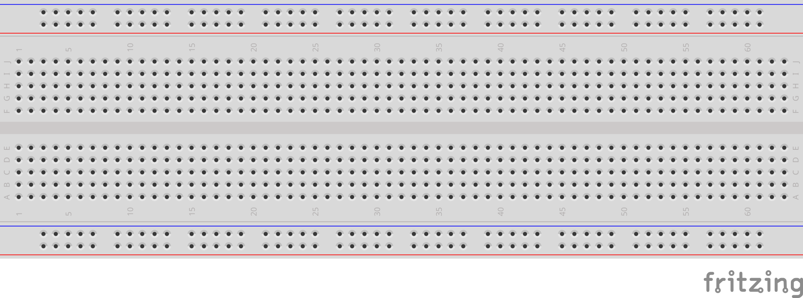

פרויקט 2 • משחק זמן תגובה
קוראים את הכרטיסייה הזאת לפני הפגישה הראשונה. לא צריך לשנן אותה — משאירים אותה על שולחן העבודה וחוזרים לכל חלק כשנתקעים.
ברדבורד מאפשר לבנות מעגלים חשמליים בלי להלחים. מכניסים את הרגליים של הרכיבים (לדים, נגדים, זמזם, חוטים) לתוך החורים, והלוח מחבר ביניהם בפנים — בלי כלים. בסוף אפשר להוציא הכל ולהשתמש בחלקים שוב.

+ ● ● ● ● ● ● ● ● ● ● ● red rail (+)
− ● ● ● ● ● ● ● ● ● ● ● blue rail (−)
a ● ● ● ● ● ● ● ● ● ● ●
b ● ● ● ● ● ● ● ● ● ● ●
c ● ● ● ● ● ● ● ● ● ● ● top half
d ● ● ● ● ● ● ● ● ● ● ●
e ● ● ● ● ● ● ● ● ● ● ●
← centre gap
f ● ● ● ● ● ● ● ● ● ● ●
g ● ● ● ● ● ● ● ● ● ● ●
h ● ● ● ● ● ● ● ● ● ● ● bottom half
i ● ● ● ● ● ● ● ● ● ● ●
j ● ● ● ● ● ● ● ● ● ● ●
+ ● ● ● ● ● ● ● ● ● ● ● red rail (+)
− ● ● ● ● ● ● ● ● ● ● ● blue rail (−)
1 2 3 4 5 6 7 8 9 10 …
ללד יש שתי רגליים באורכים שונים. הרגל הארוכה היא הצד של הפלוס; הרגל הקצרה היא הצד של המינוס. כל רגל צריכה טור ממוספר משלה — אם שתי הרגליים נכנסות לאותו טור, הלד יוצר קצר ולא יאיר.
כלל אצבע: מכניסים את הלד כך ששתי הרגליים נכנסות לשני טורים ממוספרים שונים (לדוגמה, הרגל הארוכה בטור 9 והרגל הקצרה בטור 8). גם לנגדים — שתי רגליים בשני טורים שונים.
כאשר כרטיסיית העזר R1 (חיווט פרויקט 2) כותבת "Arduino pin 9 → 220Ω → LED long leg", זו שרשרת החיבורים שבונים:
[Arduino pin 9] ── wire ── [resistor] ── [LED long leg] ── [LED short leg] ── wire ── [GND]
על הברדבורד, כל חץ בשרשרת למעלה הוא טור משותף אחד. לפי החיווט ב-R1 חיווט פרויקט 2:
הברדבורד עושה את החיווט בשבילנו — רק בוחרים לאיזה טור כל רגל נכנסת.
בדיקה 1 — האם שתי הרגליים של הלד בשני טורים שונים? אם שתי הרגליים באותו טור, הארוכה והקצרה מחוברות ישירות — זה קצר, והלד לא יאיר. מוציאים רגל אחת ומעבירים אותה טור אחד הצידה. אותו דבר נכון לזמזם — שתי רגליו בטורים שונים.
בדיקה 2 — האם כל רגל חולקת את הטור שלה עם בדיוק השכן הנכון? עוברים על השרשרת בקול רם: "הג'אמפר מחיבור דיגיטלי 9 ורגל אחת של הנגד נכנסים לאותו טור; הרגל השנייה של הנגד והרגל הארוכה של הלד נכנסות לאותו טור; הרגל הקצרה של הלד והג'אמפר ל-GND נכנסים לאותו טור". אם זוג כלשהו נמצא בטורים שונים — השרשרת שבורה שם. מעבירים את הרגל לטור המתאים.
הכרטיסייה הבאה היא R1 — חיווט פרויקט 2. משאירים את R0 על שולחן העבודה — אם משהו לא עובד בהמשך, שתי הבדיקות למעלה לרוב ימצאו את הבעיה.
R0 — איך עובד ברדבורד · פרויקט 2 משחק זמן תגובה